Lightning Network
Герасименко Демид 181-352
Введение
Lightning Network — это децентрализованная сеть, построенная на основе биткойн-сети для одноранговых платежей, мгновенная и почти бесплатная. Это решение выбора для решения проблем масштабируемости биткойнов. Хотя он все еще находится в стадии разработки, сейчас он развернут в основной сети и растет день ото дня.
По своей структуре количество транзакций, достижимых в сети Биткойн, ограничено так называемым пределом размера блока. Размер блоков, представляющих собой наборы транзакций, добавляемых в цепочку блоков, в настоящий момент не может превышать 1 МБ.
Это не проблема, когда использование остается низким: все новые транзакции проверяются и включаются несовершеннолетними в следующем блоке, так что транзакция будет подтверждена примерно через 20 минут.
Однако во время пиковых нагрузок регулярно случается, что предел достигнут и блоки заполнены. Поскольку майнеры пытаются максимизировать свою прибыль, они предпочитают более высокооплачиваемые платежи, что создает механизм торгов. Увеличиваются транзакционные издержки наиболее спешных пользователей и сокращается время подтверждения. Это произошло, например, в декабре 2017 года, когда средние сборы превысили десять евро, а время подтверждения можно было подсчитать в днях!
Таким образом, биткойн имеет проблему масштабируемости, то есть плохо адаптируется к растущему спросу на использование. Чтобы решить эту проблему, простейшим решением было бы увеличение предела размера блока, как и других криптовалют. Но большая часть сообщества предпочитает не использовать это решение для сохранения максимальной децентрализации сети. Поэтому разработчики биткойнов предпочитают масштабирование вне канала, это будет сделано с помощью нескольких решений, в том числе известной сети Lightning.
Отличия Lightning Network от других способов оплаты в интернете
Все мы привыкли платить в интернете с помощью банковских карт или электронных кошельков (Яндекс деньги, PayPal, Webmoney и т.п.), так как этот способ оплаты поддерживается большинством сайтов, которые используют оплату в интернете. Но навряд ли вы встречали возможность оплаты в интернете с помощью Lightning Network.
На данный момент Lightning Network находится в режиме активной разработки.
Сравнивать платежи Lightning Network с другими способами оплаты в интернете проблематично из-за их отличающейся структуры. Но чем же тогда Lightning Network отличается от привычных платежей в интернете?
Как и давний вопрос о том, издает ли звук дерево, падающее в лесу, если все стороны согласны с тем, что дерево упало в 2:45 после полудня, то дерево действительно упало в 2:45 после полудня. Точно так же, если оба контрагента согласны с тем, что текущий баланс внутри канала составляет 0,07 биткойнов для Алисы и 0,03 биткойнов для Боба, то это истинный баланс. Однако без криптографии возникает интересная проблема: если один из контрагентов не согласен с текущим остатком средств (или временем, когда дерево упало), то это одно слово против другого. Без криптографических подписей блокчейн не будет знать, кому что принадлежит. Если баланс в канале составляет 0,05 биткойнов для Алисы и 0,05 биткойнов для Боба, а баланс после транзакции составляет 0,07 биткойнов для Алисы и 0,03 биткойнов для Боба, сеть должна знать, какой набор балансов верен. Транзакции блокчейна решают эту проблему, используя регистр блокчейна в качестве системы меток времени. В то же время желательно создать систему, которая не будет активно использовать эту систему отметок времени, за исключением случаев, когда это абсолютно необходимо, поскольку это может стать дорогостоящим для сети.
Создание сети каналов микроплатежей обеспечивает масштабируемость биткойнов, микроплатежи вплоть до сатоши и почти мгновенные транзакции. Эти каналы представляют собой реальные биткойн-транзакции с использованием биткойн-сценариев, которые позволяют переводить средства без риска кражи контрагента, особенно при долгосрочном снижении риска майнера.
Обзор кошелька для Lightning Network
| Название | Éclair Mobile Testnet |
| Версия | 0.4.9 |
| Платформа | Android, Windows (нода около 150 ГБ) |
| Поддержка других криптовалют | Satoshi, Bitcoin, Bits, Milli-Bitcoin |
| Последнее обновление | 4 октября 2019 г. |
| Разработчик | AACINQ |
| Размер файла | 26 Мб |
| Язык программирования | Java, C |
| Язык интерфейса | EN |
| Срок действия запроса на оплату | 20 мин |
| Какая версия и реализация LN | Eclair - Scala-реализация сети Lightning |
| OpenSource | Да |
| Кастодиальный | Нет |
| Off chain или on chain | On chain и Off chain |
Для тестирования технологии Lightning Network, я выбрал тестовый вариант приложения Eclair Mobile Testnet для платформы Android.
Страница кошелька — https://github.com/ACINQ/eclair-mobile
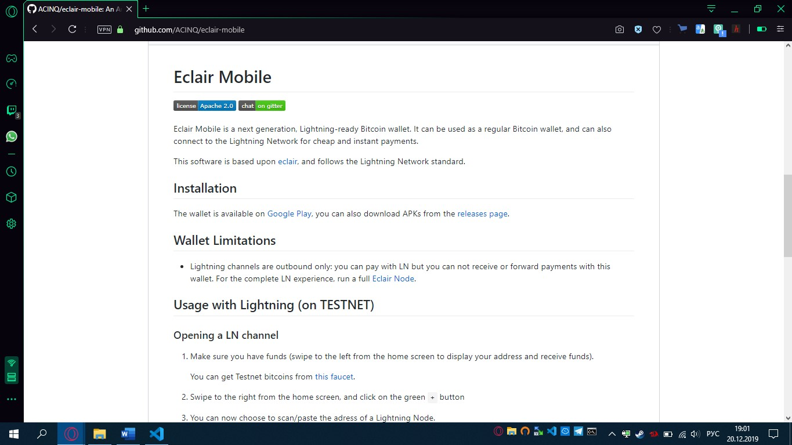
В Play Market вводим Eclair поиск нам выдаст 2 приложения выбираем то что с подписью Testnet и нажимаем кнопку установить
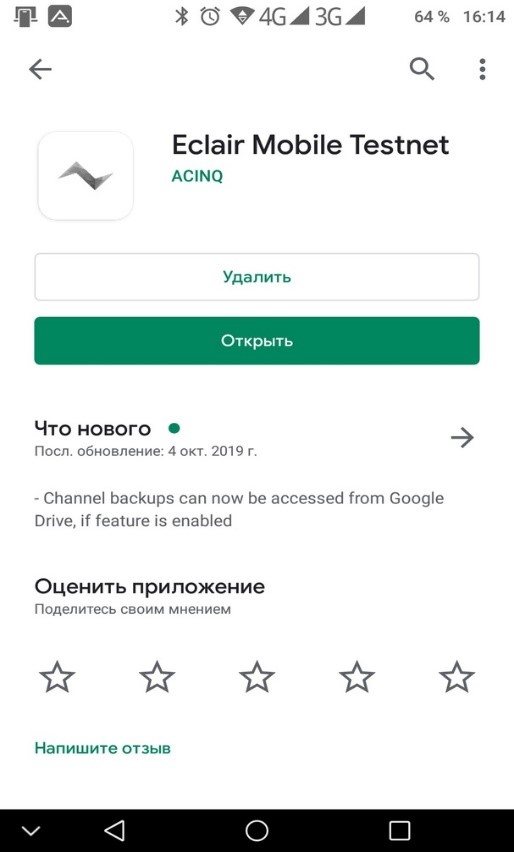
При первом включении кошелек просит записать seed-фразу, состоящую из 12 слов, затем подтвердить ее, это стандартное требование для создания кошелька.
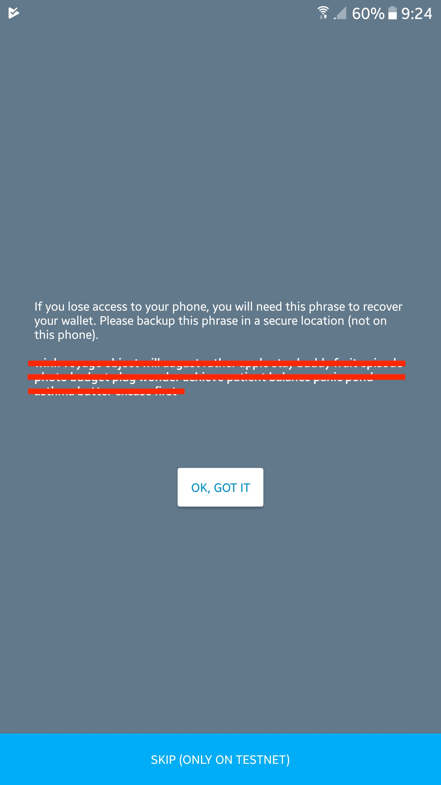
После этого попадаем на главную страницу (система проведет краткую экскурсию по основным функциям). Кошелек готов, можно тестировать сеть.
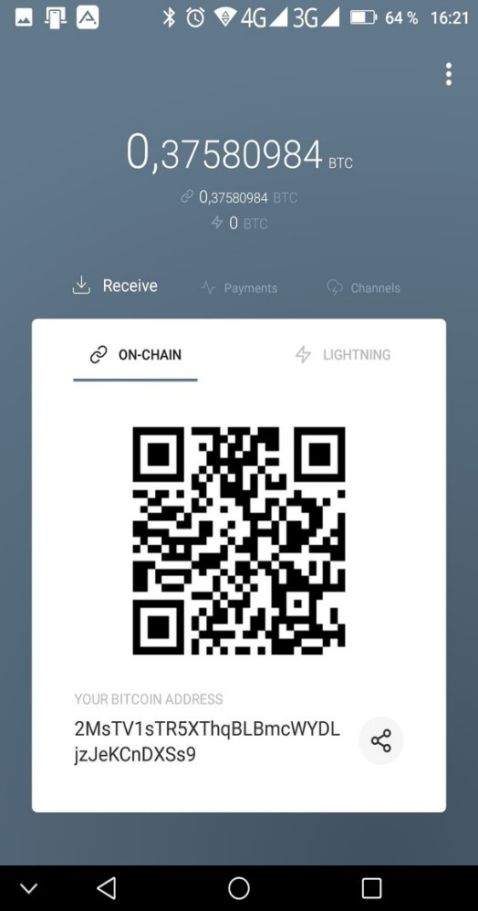
Для экспериментов необходимо получить бесплатные монеты. Вставляем адрес нашего тестового кошелька https://coinfaucet.eu/en/btc-testnet/ и получаем тестовые Bitcoin на счет
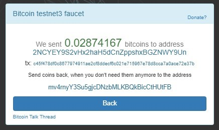
Обзор приложения, в которое можно заплатить кошельком
Давайте купим кофе в тестовом магазине Starblocks, который разработали éclair для проведения тестовых оплат. https://starblocks.acinq.co
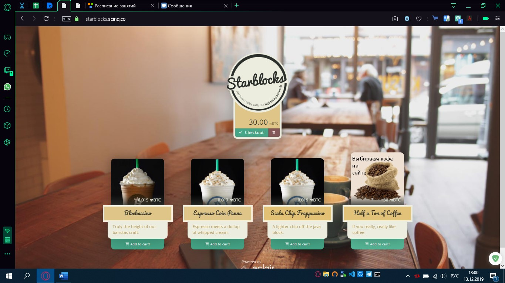
Шаг 1.
Открываем канал с небольшой суммой, чтобы он быстрее подтвердился в сети.
Дожидаемся его подтверждения (после того как мы увидим надпись «Normal»
система позволит совершить платёж).
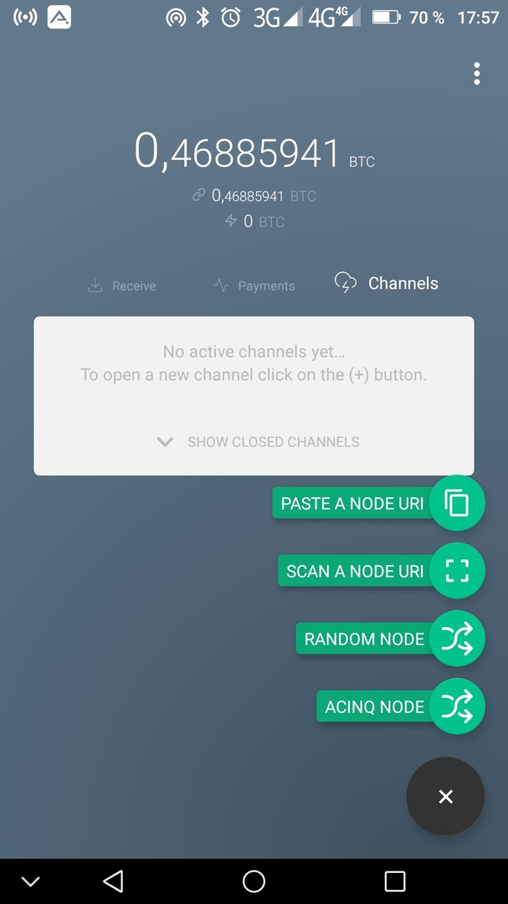 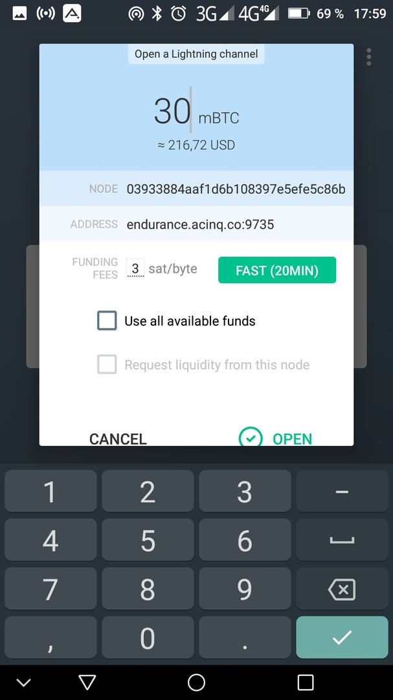 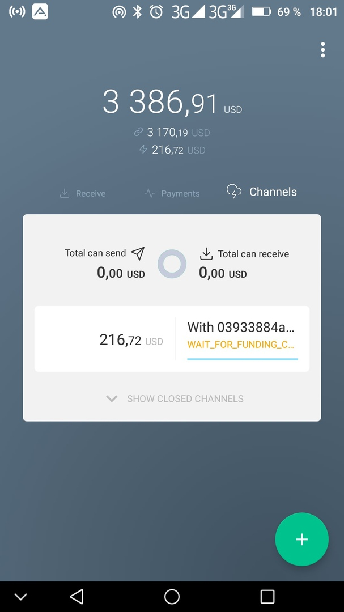
Шаг 2.
Выбираем кофе на сайте. Нажимаем «Checkout».
Шаг 3.
Появляется окно с QR-кодом, который необходимо сканировать в кошельке.
Производим оплат с помощью кошелька, и, если оплата произведена успешно
на сайте появится соответствующее окно. Самое главное, никакой комиссии за перевод внутри сети.
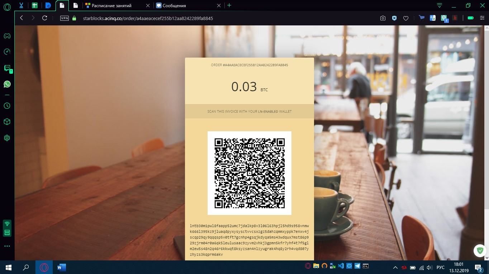 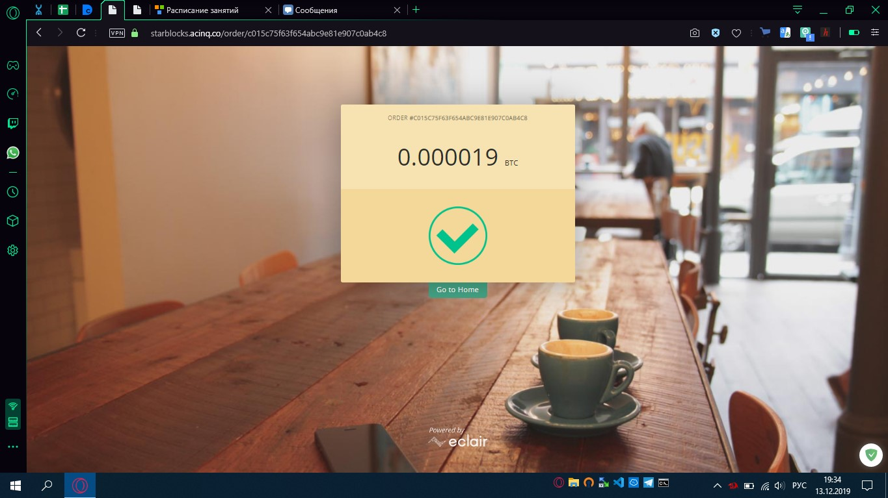 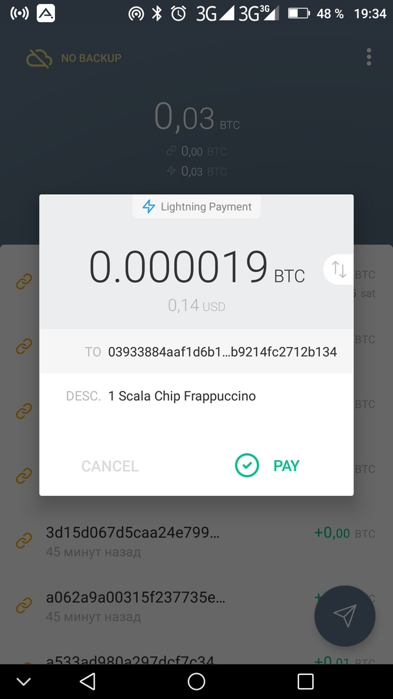 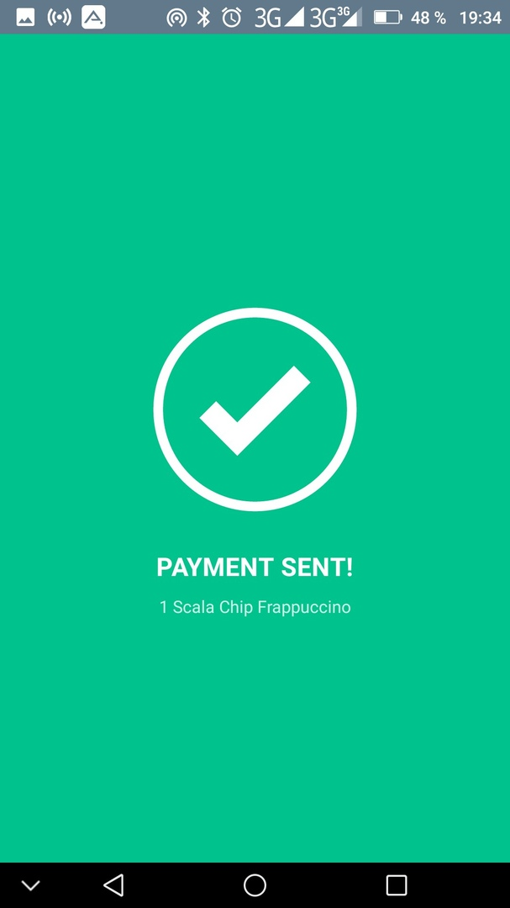
Шаг 4.
Закрываем канал после успешной оплаты.
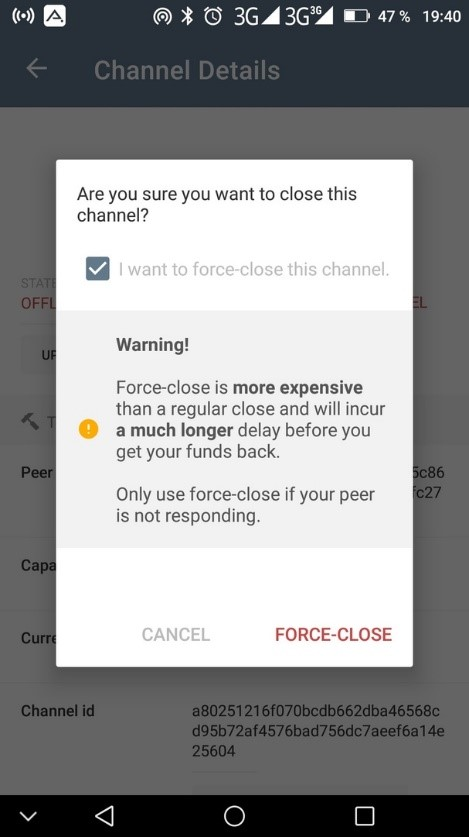 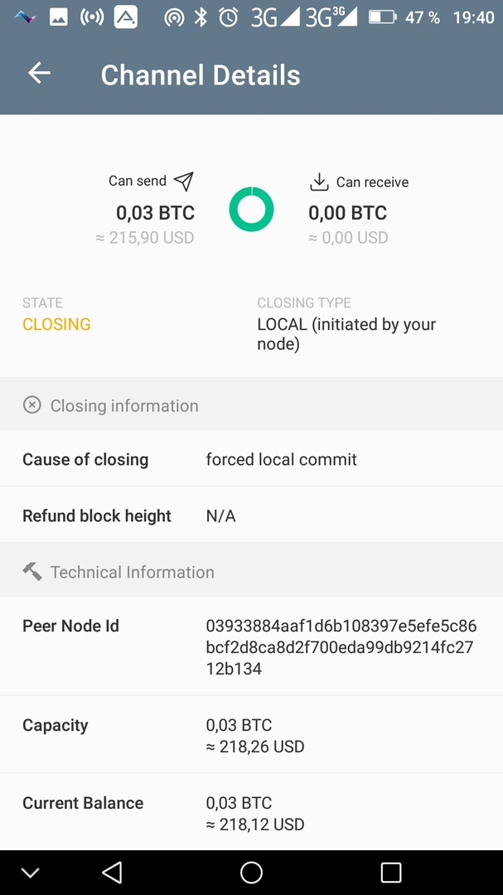 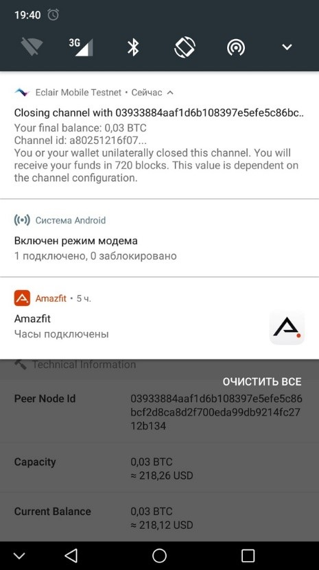
Заключение
В заключение, Lightning Network — это умная технология, которая обсуждалась и развивалась в течение многих лет. Создание такой системы показывает возможности, которые Биткойн должен развивать и, в конечном счете, навязывать себе как систему передачи ценностей, используемую массами. Есть много областей применения. Массовое внедрение сети Lightning еще не произошло, но ее характеристики позволят быстро освоить использование этой новой технологии.